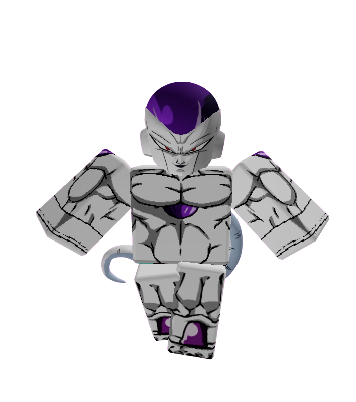

Know your place.
◆ ARCHIVE — HIGH PRIORITY ◆
FRIEZA
Status: SAFE
Archive Classification: HIGH PRIORITY
Threat Level: EXTREME
DO NOT PROVOKE THIS CONTESTANT
Quote
"Bow before your emperor."
Short Bio
Frieza entered Anime Showdown Ultimax with one goal.
Win.
He has no interest in making friends or helping anyone else unless it benefits him.
Despite this, Frieza is one of the smartest players in the competition.
He knows when to fight. He knows when to wait.
Most importantly... he knows people fear him.
How They Arrived
Before ASU
Frieza had just finished dealing with another enemy.
Victory was already his.
Before he could leave, the stars around him disappeared.
Space itself began breaking apart. A bright light surrounded him.
When it faded... he found himself somewhere entirely different.
Arrival
Unlike most contestants, Frieza showed no fear.
Instead... he smiled.
To him, this island looked less like a prison... and more like a kingdom waiting for its emperor.
Personality
Frieza is calm, patient, and incredibly cruel.
He enjoys watching people panic.
He rarely loses his temper because he believes everyone around him is beneath him.
While many contestants rely on teamwork, Frieza prefers manipulating others into doing the work for him.
Current Story
Although Frieza secretly works with the Exit Team, he has made it clear that he is not doing it out of kindness.
He wants answers. He wants power.
If escaping the island helps him reach those goals... then so be it.
Joker understands this. Neither fully trusts the other.
For now... their goals simply happen to be the same.
Relationships
Allies
- Joker — One of the few contestants Frieza considers intelligent.
- Law — Frieza respects Law's strategic thinking.
- David — Frieza finds David's optimism amusing, though he occasionally protects him for reasons even he doesn't understand.
Rivals
- Vegeta — Their rivalry followed them even into ASU. Neither intends to lose to the other.
Enemies
- The Host — Frieza refuses to accept that someone else holds power over him.
Threat Assessment
Threat Level
Archive Classification:
HIGH PRIORITY ENTITY
Lore
Frieza joined the Exit Team for one reason.
Information.
He believes knowledge is power.
The Host understands this.
Recovered Archive notes suggest the Host watches Frieza almost as often as Joker. One deleted observation reads:
"Even monsters can become useful."
Nobody knows whether Frieza noticed the observation.
If he did... he never mentioned it.
Additional Notes
- Confirmed Exit Team member.
- One of the strongest contestants currently competing.
- Rarely participates in unnecessary conversations.
- Has attempted to recruit several contestants to his side.
- Refers to the competition as "my future empire."
- Security drones automatically increase surveillance whenever Frieza enters restricted areas.
Kings do not ask for permission.
VOICE TRANSMISSION
Recovered Archive Recording